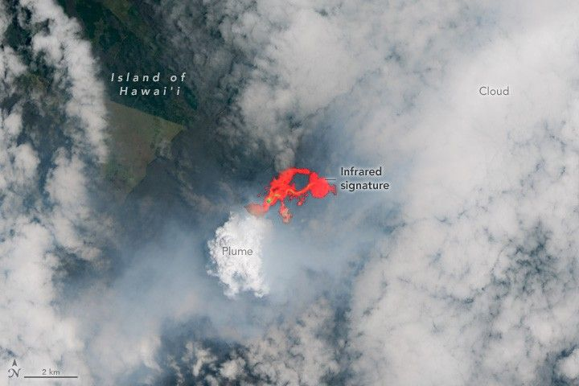

More Lava Fills Kilauea Crater
In the early morning hours of July 20, 2025, fountains of lava began pouring continuously from vents in the summit caldera of Hawaii’s Kīlauea volcano. This eruptive episode was the 29th in a series of periodic events in Halema‘uma‘u Crater that began on December 23, 2024.
The OLI (Operational Land Imager) on Landsat 8 acquired this image at approximately 10:44 a.m. local time (20:42 Universal Time) on July 20, while the eruption was underway. The natural-color image is overlaid with an infrared signature to reveal the heat emanating from lava in the summit crater. Both clouds and a volcanic plume are visible.
The sustained lava fountains lasted for over 13 hours that day, according to the U.S. Geological Survey Hawaiian Volcano Observatory (HVO). Fountains reached heights of less than 330 feet (100 meters), compared with recent episodes exceeding 1,000 feet (300 meters). However, this episode produced more voluminous flows than previous events, covering approximately 80 percent of the crater floor in new lava.
A ground photo shows the active eruption in Kīlauea’s crater. Orange lava fountains and a bright white plume rise from the right side of the crater, while glowing lava flows wind across the floor to the left. The remaining crater floor is dark in color.
After lava fountains subsided on the evening of July 20, degassing and seismic tremors continued, indicating another episode could occur, according to the HVO. The summit area also began to reinflate. Tiltmeters on the volcano have measured cycles of inflation and deflation coinciding with each eruption, as the ground swells when magma accumulates and subsides when it erupts.
As of July 23, experts awaited more data before estimating the start of episode 30. Breaks between recent episodes have ranged from 6 to 10 days. This episodic behavior was last observed at Kīlauea from 1983 to 1986, at the start of the Pu‘u‘ō‘ō eruption.